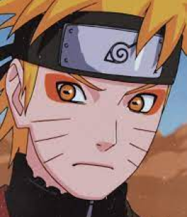
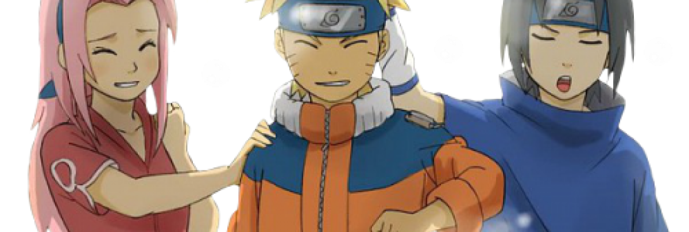

Наруто Узумаки – главный герой в аниме «Наруто», у которого было очень непростое детство. Когда Наруто родился, на деревню напал Девятихвостый зверь, Курама. Ради сохранения деревни Скрытого Листа и сына родители Наруто пожертвовали своими жизнями и запечатали зверя внутри своего новорожденного сына.
Люди в деревне ненавидели Наруто из-за того, что в нем сидел демон, и именно по этой причине у него не было друзей. Но так было не всегда. После того, как Узумаки Наруто попал в академию, то у него появился первый человек, который поверил в него. И это Ирука Умино – учитель Наруто в академии. После академии мальчик попал в команду номер 7.
Эта команда состояла из Сакуры Харуно, Саске Учихи и сенсея Какаши Хатаке. Все эти люди стали очень дороги для Наруто, особенно Сакура и Саске. Сакуру он любил, но она, увы, была без ума от Саске. А Саске для Наруто был как брат, но не похоже, что Учиха чувствовал тоже самое. На протяжении всего аниме он находит новых друзей, в том числе и Хинату Хьюго, которая влюблена в Наруто Узумаки, но кажется, что мальчик об этом даже не догадывается.
Узумаки Наруто мечтал стать Хокаге, чтобы люди в деревне приняли его и стали уважать. Мальчик проходит очень трудные тренировки, чтобы стать сильнее, проходит весь трудный путь к своей мечте. Он никогда не забирает свои слова назад, всегда исполняет свои обещания и не задумываясь бросается спасать дорогих ему людей, даже если есть большой риск распрощаться с жизнью. Наруто обладает удивительной способностью «вправлять мозги» врагам, направляя их на светлую сторону добра и делая их своими новыми друзьями.